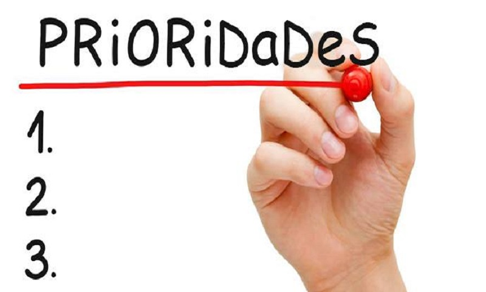

NO Urgente e Importante

Control de tu vida.
Equilibrio.
Alto desempeño.
La persona que marca prioridades, aunque no necesariamente tiene que ser perfecto, tiene todo bajo control. Revisa todas las cosas que tiene que hacer y luego hace prioridades, asegurándose de que lo más importante se haga primero, y lo último sea lo último. Dado que tiene el hábito simple pero poderoso de planificar anticipadamente, por lo general destaca en todo. Aparta tiempo para ejercitarse y renovarse, aun si esto significa dejar para después otras cosas. Aprendió a decir “no” con una sonrisa, y se resiste a la presión de sus compañeros, por eso, ellos lo suelen respetar.